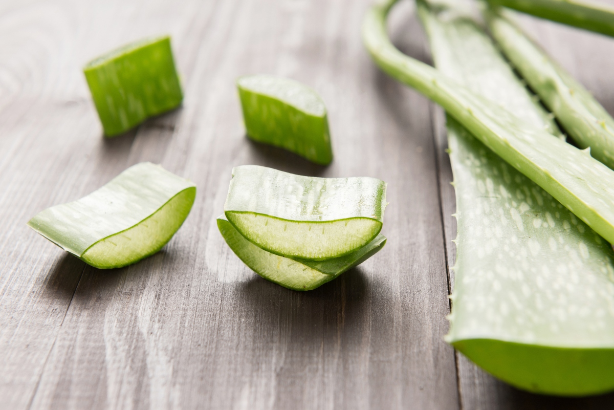

ว่านหางจระเข้
ว่านหางจระเข้ เป็นต้นพืชที่มีเนื้ออิ่มอวบ จัดอยู่ใน ตระกูลลิเลียม (Lilium) แหล่งกำเนิดดั้งเดิมอยู่ในคาบสมุทรอาหรับ สายพันธุ์ของว่านหางจระเข้มีมากกว่า 300 สายพันธุ์ ซึ่งมีทั้งพันธุ์ที่มีขนาดใหญ่มากจนไปถึงพันธุ์ที่มีขนาดเล็กกว่า 10 เซนติเมตร ลักษณะพิเศษของว่านหางจระเข้ก็คือ มีใบแหลมคล้ายกับเข็ม เนื้อหนา และเนื้อในมีน้ำเมือกเหนียว ว่านหางจระเข้ผลิดอกในช่วงฤดูหนาว ดอกจะมีสีแตกต่างกัน เช่น เหลือง ขาว และแดง เป็นต้น
ว่านหางจระเข้ปลูกง่าย โดยการใช้หน่ออ่อน ปลูกได้ดีในบริเวณที่เป็นดินทราย และมีปุ๋ยอุดมสมบูรณ์ดี จะปลูกเอาไว้ในกระถางก็ได้ ในแปลงปลูกก็ได้ ปลูกห่างกันสัก 1-2 ศอก เป็นพืชที่ต้องการน้ำมาก แต่ต้องมีการระบายน้ำดีพอ มิฉะนั้นจะทำให้รากเน่าและตาย ว่านหางจระเข้ชอบแดดรำไร ถ้าถูกแดดจัดใบจะเป็นสีน้ำตาลแดง และอีกวิธีสามารถนำเมล็ดไปปลูกในกระถางต้นไม้ได้อีกด้วย
ว่านหางจระเข้ เป็นพืชที่ต้องการน้ำมาก และต้องหมั่นพรวนดิน เนื่องจากว่านหางจระเข้ชอบดินร่วน ดังนั้นถ้าหากเห็นว่าดินเริ่มแข็งจับเป็นก้อนน้ำซึมผ่านไม่ดี หรือมีน้ำขังให้พรวนดินให้ร่วน คอยกลบโคนต้น เมื่อต้นว่าหางจระเข้โตขึ้นเรื่อย ๆ จะมีลำต้นยืดยาวขึ้นมาเหนือพื้นดินให้คอยเอา ดินกลบต้นเสมอกลบจนดินอยู่ติดชิดกับใบล่างสุด
นอกจากจะช่วยในเรื่องของการสมานแผลแล้ว ว่านหางจระเข้ยังมีการนำไปใช้ประโยชน์เพื่อลดการอักเสบ เราจึงเห็นผลิตภัณฑ์ที่นำประโยชน์ของว่านหางจระเข้ไปเป็นส่วนผสมในรูปแบบต่างๆ ทั้งครีมทารักษาโรคผิวหนังและแผลอักเสบ ที่ช่วยรักษาการอักเสบของผิวหนังและเนื้อเยื่ออ่อน หรือการทำเป็นโลชั่นโดยมีส่วนประกอบของวุ้นว่านหางจระเข้ เป็นต้น
เอาว่านหางจระเข้ทั้งใบไปแช่ตู้เย็น 4 - 5 วัน. ใช้แรปพลาสติกห่อใบ โดยเฉพาะต้องห่อรอยตัดตรงโคนใบที่เคยติดอยู่กับต้นไว้ให้ดี จะใช้ว่านหางจระเข้เมื่อไหร่ ค่อยแกะห่อพลาสติก แล้วเริ่มสกัดวุ้นออกมา